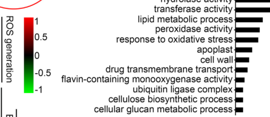

OsEIL2 (Q8W3L9; ETHYLENE-INSENSITIVE3-LIKE 2, also OsEIL2/EIL2, Os07g0685700) is a plant-specific, nuclear EIN3/EIL-family transcription factor that acts as a central transducer of ethylene signaling in rice. EIN3/EIL proteins are the master transcriptional outputs of the canonical ethylene cascade: ethylene perceived by ER-localized receptors is relayed through CTR-type kinases to EIN2, after which EIN2-dependent events promote accumulation of EIN3/EIL transcription factors that directly bind target-gene promoters and reprogram transcription (Zhao et al. 2021, PMID-not-cached; deep-research synthesis). OsEIL2 is positioned downstream of OsEIN2 and, together with its paralog OsEIL1 (MHZ6), is described as one of "two master regulators of rice ethylene signaling" (Qiao et al. 2024). OsEIL2 binds DNA in a sequence-specific manner - recombinant protein binds the wound-inducible EIL recognition element, and the ATGTACCT motif found in wound-inducible gene promoters (Hiraga et al. 2009, PMID:19798512) - and possesses transactivation activity in protoplasts/yeast, partially complementing the Arabidopsis ein3-1 mutant (Jin et al. 2020). The OsEIL2 protein localizes to the nucleus, and its nuclear accumulation increases after ACC (ethylene precursor) and after the proteasome inhibitor MG132, consistent with ethylene-regulated, EBF-mediated turnover of EIN3/EIL proteins. Functionally OsEIL2 is required for ethylene-promoted coleoptile elongation (silencing causes coleoptile ethylene insensitivity), and it directs distinct context-dependent output programs: in coleoptiles it cooperates with OsEIL1 to activate ROS-scavenging genes (OsVTC1-3, peroxidases) to reduce ROS and enable seedling emergence (Qiao et al. 2024); in abiotic-stress contexts it directly activates the cell-wall/BURP gene OsBURP16 (promoting polygalacturonase activity and pectin remodeling) and the Na+ transporter OsHKT2;1, acting as a negative regulator of salt tolerance (Yang et al. 2015, PMID:25995326; Jin et al. 2020); and it participates in wound signaling as a wound- and jasmonate-inducible EIL that regulates wound-responsive genes (Hiraga et al. 2009). Because EIN3/EIL transcription factors are genuine, defining components of the ethylene-activated signaling pathway (the master nuclear effectors of the cascade, distinct from purely downstream ERF response factors), "ethylene-activated signaling pathway" (GO:0009873) is a CORRECT and core annotation for OsEIL2; the retired SPKW keyword mapping in this case captured a true biological role, comparable to legitimate cases such as DELLA/NSP1.
| GO Term | Evidence | Action | Reason |
|---|---|---|---|
|
GO:0009873
ethylene-activated signaling pathway
|
IEA
GO_REF:0000043 |
ACCEPT |
Summary: SPKW (GO_REF:0000043) annotation derived from the UniProt keyword "Ethylene signaling pathway"; snapshot-only, removed in the current GOA release. OsEIL2 is an EIN3/EIL-family transcription factor that functions as a central nuclear transducer of ethylene signaling, so this term is biologically CORRECT and core for the gene.
Reason: GOA's removal of this annotation was NOT justified - this is collateral damage from retiring the keyword2GO pipeline, not a correction of an over-annotation. EIN3/EIL proteins are the master transcriptional effectors of the ethylene-activated signaling pathway, acting downstream of the ER receptors/CTR1->EIN2 module to directly drive ethylene-responsive transcription; unlike purely downstream ERF response factors, the EIN3/EIL transcription factors are canonically considered defining COMPONENTS of the pathway. OsEIL2 is explicitly described, with its paralog OsEIL1, as one of "two master regulators of rice ethylene signaling" and is positioned downstream of OsEIN2 [file:ORYSJ/EIL2/EIL2-deep-research-falcon.md]. The UniProt FUNCTION statement calls it a "Transcription factor acting as a positive regulator in the ethylene response pathway" and it is required for ethylene-promoted coleoptile elongation [PMID:25995326]. This is a Tier A keyword (the keyword names the exact pathway the protein operates in) and the verdict is LEGITIMATE: the term should be retained as a core biological process for OsEIL2. (The current GOA release retains the more specific "regulation of ethylene-activated signaling pathway" GO:0010104, but the parent pathway-membership term GO:0009873 is also appropriate and informative.)
Supporting Evidence:
file:ORYSJ/EIL2/EIL2-deep-research-falcon.md
OsEIL2 is a nuclear EIN3/EIL transcription factor positioned downstream of OsEIN2 in canonical rice ethylene signaling.
file:ORYSJ/EIL2/EIL2-deep-research-falcon.md
Oseil1 and oseil2, two master regulators of rice ethylene signaling
PMID:25995326
MHZ6 encodes ETHYLENE INSENSITIVE3-LIKE1 (OsEIL1), a rice homolog of ETHYLENE INSENSITIVE3 (EIN3), which is the master transcriptional regulator of ethylene signaling in Arabidopsis
|
|
GO:0003700
DNA-binding transcription factor activity
|
IEA
GO_REF:0000120 |
ACCEPT |
Summary: IEA annotation from combined automated methods (ARBA / InterPro EIN3 DNA-binding domain signatures). OsEIL2 is a bona fide DNA-binding transcription factor; this is a core molecular function.
Reason: Correct and core. The protein carries the EIN3 DNA-binding domain (Pfam PF04873; InterPro IPR006957/IPR023278/IPR047091) and was shown experimentally to be a transcription factor: recombinant OsEIL2 binds specific DNA sequences and the protein has transactivation activity in protoplasts [PMID:19798512, PMID:25995326]. The IEA term is at an appropriate level; the duplicate IDA annotation (PMID:25995326) provides direct experimental support. A more specific transcription-activator term is proposed below (GO:0001228).
Supporting Evidence:
file:ORYSJ/EIL2/EIL2-deep-research-falcon.md
OsEIL2 functions as a transcriptional regulator consistent with EIN3/EIL family activity.
PMID:19798512
recombinant OsEIL1 and 2 proteins bound to specific DNA sequences that are recognized by a wound-inducible tobacco EIL
|
|
GO:0005634
nucleus
|
IEA
GO_REF:0000120 |
ACCEPT |
Summary: IEA annotation for nuclear localization from combined automated methods. Directly confirmed in rice by fluorescent-fusion imaging.
Reason: Correct and consistent with the duplicate IDA annotation (PMID:25995326). OsEIL2-YFP/GFP fusions localize predominantly to the nucleus, and nuclear accumulation increases after ACC (ethylene precursor) and after the proteasome inhibitor MG132, consistent with ethylene-regulated stabilization of an EIN3/EIL transcription factor [file:ORYSJ/EIL2/EIL2-deep-research-falcon.md]. Nuclear localization is the expected and required site for its transcription-factor function.
Supporting Evidence:
file:ORYSJ/EIL2/EIL2-deep-research-falcon.md
OsEIL2 fusion proteins (YFP/GFP) localized predominantly to the nucleus in transient assays and stable rice materials.
|
|
GO:0010104
regulation of ethylene-activated signaling pathway
|
IEA
GO_REF:0000117 |
ACCEPT |
Summary: IEA annotation (ARBA) for regulation of the ethylene-activated signaling pathway. OsEIL2 is a core component/effector of ethylene signaling; this term is accepted (it duplicates the IDA and IMP annotations to the same term).
Reason: Correct and core. OsEIL2 acts as a positive regulator/effector in the ethylene response pathway downstream of OsEIN2, and its activity tunes the output of the cascade [PMID:25995326, file:ORYSJ/EIL2/EIL2-deep-research-falcon.md]. This IEA duplicates the experimentally supported IDA (PMID:19798512) and IMP (PMID:25995326) annotations to the same term and is at an appropriate level of specificity.
Supporting Evidence:
file:ORYSJ/EIL2/EIL2-deep-research-falcon.md
OsEIL2 is a nuclear EIN3/EIL transcription factor positioned downstream of OsEIN2 in canonical rice ethylene signaling.
PMID:25995326
MHZ6/OsEIL1 and OsEIL2 negatively regulate salt tolerance in rice
|
|
GO:0043565
sequence-specific DNA binding
|
IEA
GO_REF:0000117 |
ACCEPT |
Summary: IEA annotation (ARBA) for sequence-specific DNA binding. Directly demonstrated for OsEIL2 by EMSA; duplicates the IDA annotation (PMID:19798512).
Reason: Correct and core. OsEIL2 binds DNA sequence-specifically: electrophoretic mobility shift assays showed recombinant OsEIL2 bound the specific element recognized by a wound-inducible tobacco EIL [PMID:19798512], and UniProt records binding to the 5'-ATGTACCT-3' motif in wound-inducible gene promoters. This is consistent with the EIN3-family DNA-binding domain and supports the transcription-factor function.
Supporting Evidence:
PMID:19798512
recombinant OsEIL1 and 2 proteins bound to specific DNA sequences that are recognized by a wound-inducible tobacco EIL
file:ORYSJ/EIL2/EIL2-deep-research-falcon.md
the N-terminal region implicated in DNA binding/activator function
|
|
GO:0045893
positive regulation of DNA-templated transcription
|
IEA
GO_REF:0000117 |
ACCEPT |
Summary: IEA annotation (ARBA) for positive regulation of transcription. OsEIL2 is a transcriptional activator; duplicates the IDA annotation (PMID:25995326).
Reason: Correct. OsEIL2 possesses transactivation activity (in protoplasts and in yeast GAL4 assays, with activity mapped to the C-terminal region) and directly activates target genes such as OsBURP16, OsHKT2;1 and ROS-scavenging genes [PMID:25995326, file:ORYSJ/EIL2/EIL2-deep-research-falcon.md]. The term is accurate though generic; a more specific RNA-polymerase-II activator process term (GO:0045944) is proposed below.
Supporting Evidence:
file:ORYSJ/EIL2/EIL2-deep-research-falcon.md
OsEIL2 showed transactivation activity in yeast GAL4-based assays
file:ORYSJ/EIL2/EIL2-deep-research-falcon.md
Possesses transactivation activity in protoplasts
|
|
GO:0003700
DNA-binding transcription factor activity
|
IDA
PMID:25995326 MAOHUZI6/ETHYLENE INSENSITIVE3-LIKE1 and ETHYLENE INSENSITIV... |
ACCEPT |
Summary: IDA annotation: OsEIL2 has transactivation activity in protoplasts, confirming DNA-binding transcription factor activity. Core molecular function.
Reason: Strongly supported by direct experimental evidence. Yang et al. (2015) showed OsEIL2 possesses transactivation activity in protoplasts and directly regulates target-gene expression (e.g. OsHKT2;1) [PMID:25995326]. Together with the sequence-specific DNA-binding data this firmly establishes OsEIL2 as a DNA-binding transcription factor. A more specific transcription-activator term (GO:0001228) is proposed below.
Supporting Evidence:
file:ORYSJ/EIL2/EIL2-deep-research-falcon.md
Possesses transactivation activity in protoplasts
PMID:25995326
the direct regulation of HIGH-AFFINITY K(+) TRANSPORTER2;1 expression and Na(+) uptake in roots
|
|
GO:0005634
nucleus
|
IDA
PMID:25995326 MAOHUZI6/ETHYLENE INSENSITIVE3-LIKE1 and ETHYLENE INSENSITIV... |
ACCEPT |
Summary: IDA annotation: OsEIL2 localizes to the nucleus (Yang et al. 2015). Core cellular component, the site of its transcription-factor function.
Reason: Strongly supported by direct evidence; UniProt records SUBCELLULAR LOCATION: Nucleus with ECO:0000269|PubMed:25995326. OsEIL2-YFP/GFP fusions localize predominantly to the nucleus and accumulation is ethylene/proteasome-sensitive [file:ORYSJ/EIL2/EIL2-deep-research-falcon.md]. Nuclear localization is required for and consistent with the gene's role as a transcription factor.
Supporting Evidence:
file:ORYSJ/EIL2/EIL2-deep-research-falcon.md
OsEIL2 fusion proteins (YFP/GFP) localized predominantly to the nucleus in transient assays and stable rice materials.
|
|
GO:0010104
regulation of ethylene-activated signaling pathway
|
IDA
PMID:19798512 Involvement of two rice ETHYLENE INSENSITIVE3-LIKE genes in ... |
ACCEPT |
Summary: IDA annotation citing the wound-signaling study (Hiraga et al. 2009). OsEIL2 is a wound- and JA-inducible EIL that binds DNA and regulates wound-responsive genes, operating within the ethylene/EIL signaling module.
Reason: Supported. Hiraga et al. (2009) showed OsEIL2 is a wound-inducible EIN3-LIKE transcription factor whose recombinant protein binds the EIL DNA recognition element and whose suppression down-regulates wound-inducible candidate target genes [PMID:19798512]. As an EIN3/EIL transcription factor, OsEIL2 is a core effector of the ethylene-activated signaling pathway, so "regulation of ethylene-activated signaling pathway" is appropriate. Accepted as core.
Supporting Evidence:
PMID:19798512
ETHYLENE INSENSITIVE3 (EIN3), which is an essential transcription factor for ethylene signaling
PMID:19798512
only OsEIL1 and 2 were found to be wound-inducible EIL
|
|
GO:0010104
regulation of ethylene-activated signaling pathway
|
IMP
PMID:25995326 MAOHUZI6/ETHYLENE INSENSITIVE3-LIKE1 and ETHYLENE INSENSITIV... |
ACCEPT |
Summary: IMP annotation: silencing OsEIL2 causes ethylene insensitivity in coleoptiles, demonstrating its role in (regulation of) the ethylene-activated signaling pathway. Core function.
Reason: Strongly supported by loss-of-function genetics. Silencing OsEIL2 led to ethylene insensitivity mainly in coleoptiles of etiolated seedlings, and plants silencing EIL2 exhibit insensitivity in ethylene-promoted coleoptile elongation [PMID:25995326]. This is direct mutant-phenotype evidence that OsEIL2 is required for ethylene signaling output, supporting the term at an appropriate level.
Supporting Evidence:
PMID:25995326
silencing of the closely related OsEIL2 led to ethylene insensitivity mainly in coleoptiles of etiolated seedlings
file:ORYSJ/EIL2/EIL2-deep-research-falcon.md
Required for ethylene-promoted coleoptile elongation
|
|
GO:0043565
sequence-specific DNA binding
|
IDA
PMID:19798512 Involvement of two rice ETHYLENE INSENSITIVE3-LIKE genes in ... |
ACCEPT |
Summary: IDA annotation: EMSA shows recombinant OsEIL2 binds a specific DNA element (Hiraga et al. 2009). Core molecular function underpinning its transcription-factor activity.
Reason: Strongly supported by direct in vitro binding data. Electrophoretic mobility shift assays showed recombinant OsEIL2 bound the specific DNA sequence recognized by a wound-inducible tobacco EIL, and wound-induced DNA-binding activity increased in rice nuclear extracts [PMID:19798512]; UniProt records binding to the 5'-ATGTACCT-3' motif. Core MF.
Supporting Evidence:
PMID:19798512
recombinant OsEIL1 and 2 proteins bound to specific DNA sequences that are recognized by a wound-inducible tobacco EIL
PMID:19798512
the corresponding DNA-binding activity in nuclear extracts of rice leaves was increased at 1 h after wounding
|
|
GO:0045893
positive regulation of DNA-templated transcription
|
IDA
PMID:25995326 MAOHUZI6/ETHYLENE INSENSITIVE3-LIKE1 and ETHYLENE INSENSITIV... |
ACCEPT |
Summary: IDA annotation: OsEIL2 directly activates target-gene transcription (e.g. OsHKT2;1) and has transactivation activity (Yang et al. 2015). Accepted.
Reason: Supported. OsEIL2 has transactivation activity in protoplasts and directly activates target genes including the Na+ transporter OsHKT2;1 [PMID:25995326]. The term is correct; a more precise RNA-polymerase-II-specific activator process term (GO:0045944) is proposed below as a complementary NEW annotation.
Supporting Evidence:
PMID:25995326
the direct regulation of HIGH-AFFINITY K(+) TRANSPORTER2;1 expression and Na(+) uptake in roots
file:ORYSJ/EIL2/EIL2-deep-research-falcon.md
Possesses transactivation activity in protoplasts
|
|
GO:1901001
negative regulation of response to salt stress
|
IMP
PMID:25995326 MAOHUZI6/ETHYLENE INSENSITIVE3-LIKE1 and ETHYLENE INSENSITIV... |
KEEP AS NON CORE |
Summary: IMP annotation: OsEIL2 negatively regulates salt tolerance in rice (loss of function improves tolerance; overexpression causes hypersensitivity). A genuine but non-core, context-dependent process for this transcription factor.
Reason: Supported by loss- and gain-of-function genetics: lack of OsEIL2 improves salt tolerance whereas overexpression confers salt hypersensitivity, and OsEIL2 (with OsEIL1) negatively regulates salt tolerance in part by directly activating OsHKT2;1 and Na+ uptake in roots [PMID:25995326]. This is a real, demonstrated role, but it is a downstream, tissue/stress-context-specific output of OsEIL2's transcription-factor activity rather than its defining core molecular function (which is ethylene-signaling transcription-factor activity). Retain as non-core.
Supporting Evidence:
PMID:25995326
lack of MHZ6/OsEIL1 or OsEIL2 functions improves salt tolerance, whereas the overexpressing lines exhibit salt hypersensitivity at the seedling stage
PMID:25995326
MHZ6/OsEIL1 and OsEIL2 negatively regulate salt tolerance in rice
file:ORYSJ/EIL2/EIL2-deep-research-falcon.md
Acts as a negative regulator of salt tolerance
|
|
GO:1903034
regulation of response to wounding
|
IDA
PMID:19798512 Involvement of two rice ETHYLENE INSENSITIVE3-LIKE genes in ... |
KEEP AS NON CORE |
Summary: IDA annotation: OsEIL2 is a wound- and JA-inducible EIL transcription factor that regulates wound-responsive genes (Hiraga et al. 2009). A genuine but non-core, context-specific process.
Reason: Supported. OsEIL2 transcript is wound-inducible (and JA-inducible), its DNA-binding activity rises after wounding, and suppression of OsEIL1/2 down-regulated several wound-inducible candidate target genes, indicating involvement in wound signaling [PMID:19798512]. This is a real role, but it is one context-specific output program of an EIN3/EIL transcription factor whose core identity is ethylene-signaling transcription-factor activity; retain as non-core.
Supporting Evidence:
PMID:19798512
only OsEIL1 and 2 were found to be wound-inducible EIL. OsEIL2 was also induced by JA
PMID:19798512
These results indicate the importance of inducible OsEILs in wound signaling in rice
|
|
GO:0001228
DNA-binding transcription activator activity, RNA polymerase II-specific
|
IDA
PMID:25995326 MAOHUZI6/ETHYLENE INSENSITIVE3-LIKE1 and ETHYLENE INSENSITIV... |
NEW |
Summary: OsEIL2 is a sequence-specific DNA-binding transcriptional ACTIVATOR (it has transactivation activity and directly upregulates protein-coding target genes). The more specific activator MF term better captures its function than the generic "DNA-binding transcription factor activity".
Reason: Current GOA has the generic "DNA-binding transcription factor activity" (GO:0003700) but not the more informative activator term. OsEIL2 possesses transactivation activity in protoplasts and yeast GAL4 assays (activity mapped to the C-terminus), partially complements the Arabidopsis ein3-1 mutant, and directly activates expression of protein-coding targets (OsBURP16, OsHKT2;1, OsVTC1-3, peroxidases) [PMID:25995326, file:ORYSJ/EIL2/EIL2-deep-research-falcon.md]. As a nuclear, sequence-specific activator of protein-coding genes, "DNA-binding transcription activator activity, RNA polymerase II-specific" (GO:0001228) is the precise molecular function. IDA is justified by the protoplast/yeast transactivation assays.
Supporting Evidence:
file:ORYSJ/EIL2/EIL2-deep-research-falcon.md
OsEIL2 showed transactivation activity in yeast GAL4-based assays
file:ORYSJ/EIL2/EIL2-deep-research-falcon.md
could partially complement an Arabidopsis ein3-1 mutant, supporting conserved EIN3-like functionality
PMID:25995326
the direct regulation of HIGH-AFFINITY K(+) TRANSPORTER2;1 expression and Na(+) uptake in roots
|
|
GO:0045944
positive regulation of transcription by RNA polymerase II
|
IDA
PMID:25995326 MAOHUZI6/ETHYLENE INSENSITIVE3-LIKE1 and ETHYLENE INSENSITIV... |
NEW |
Summary: OsEIL2 directly activates transcription of protein-coding ethylene/stress target genes. The RNA-polymerase-II-specific positive-regulation term is more precise than the generic "positive regulation of DNA-templated transcription" already present.
Reason: OsEIL2 directly binds promoters and activates expression of protein-coding target genes - OsHKT2;1 [PMID:25995326], OsBURP16, and ROS-scavenging genes OsVTC1-3 and peroxidases [file:ORYSJ/EIL2/EIL2-deep-research-falcon.md]. These are RNA-polymerase-II-transcribed genes, so "positive regulation of transcription by RNA polymerase II" (GO:0045944) is the specific process term complementing the generic GO:0045893 already annotated. IDA is justified by direct target-activation (ChIP/EMSA/dual-LUC) and transactivation evidence.
Supporting Evidence:
file:ORYSJ/EIL2/EIL2-deep-research-falcon.md
OsEIL1/OsEIL2 were reported to bind promoters and activate expression of a non-enzymatic antioxidant pathway component OsVTC1-3
PMID:25995326
the direct regulation of HIGH-AFFINITY K(+) TRANSPORTER2;1 expression and Na(+) uptake in roots
|
Q: How functionally redundant are OsEIL1 and OsEIL2 in rice ethylene signaling, and what determines their organ-specific divergence (OsEIL1 mainly in roots, OsEIL2 mainly in coleoptiles)?
Suggested experts: Jin-Song Zhang
Q: Does OsEIL2 directly bind a defined ethylene-response cis-element genome-wide (e.g. by ChIP-seq), and how does its in vivo target set differ from OsEIL1's?
Suggested experts: Hua Qin
Q: Is OsEIL2 protein turnover controlled by rice OsEBF1/2 F-box proteins and the MHZ9 translational-control module in the same way demonstrated for OsEIL1?
Suggested experts: Cui-Cui Yin
Experiment: Perform ChIP-seq with an epitope-tagged OsEIL2 under ethylene (ACC) treatment to define its direct genome-wide binding sites and consensus cis-element, and integrate with RNA-seq of oseil2 loss-of-function and overexpression lines to define the direct ethylene-responsive regulon.
Hypothesis: OsEIL2 directly binds an EIN3/EIL-type cis-element in the promoters of ethylene- and stress-responsive genes and activates their transcription as a primary effector of the ethylene-activated signaling pathway.
Type: ChIP-seq + RNA-seq regulon mapping
Experiment: Test OsEIL2 protein stability in response to ACC and MG132, and in oseil2 backgrounds expressing OsEBF1/2 variants, to determine whether OsEIL2 is stabilized by ethylene via repression of EBF-mediated proteasomal degradation, as for EIN3/OsEIL1.
Hypothesis: OsEIL2, like other EIN3/EIL proteins, is degraded by EBF1/2-directed proteolysis in the absence of ethylene and stabilized upon ethylene perception.
Type: protein-stability / proteasome-dependence assay
Experiment: Generate clean oseil1 oseil2 single and double CRISPR mutants and quantify ethylene-response phenotypes (coleoptile/root elongation, triple response, seedling emergence from soil) and salt/wound responses, to dissect their individual and combined contributions to the pathway.
Hypothesis: OsEIL1 and OsEIL2 act partially redundantly as master ethylene-signaling transcription factors, with the double mutant showing strongly attenuated ethylene responses and ROS-dependent emergence defects.
Type: genetic loss-of-function / epistasis analysis
The research report should be a detailed narrative explaining the function, biological processes, and localization of the gene product. Citations should be given for all claims.
You should prioritize authoritative reviews and primary scientific literature when conducting research. You can supplement
this with annotations you find in gene/protein databases, but these can be outdated or inaccurate.
We are specifically interested in the primary function of the gene - for enzymes, what reaction is catalyzed, and what is the substrate specificity? For transporters, what is the substrate? For structural proteins or adapters, what is the broader structural role? For signaling molecules, what is the role in the pathway.
We are interested in where in or outside the cell the gene product carries out its function.
We are also interested in the signaling or biochemical pathways in which the gene functions. We are less interested in broad pleiotropic effects, except where these elucidate the precise role.
Include evidence where possible. We are interested in both experimental evidence as well as inference from structure, evolution, or bioinformatic analysis. Precise studies should be prioritized over high-throughput, where available.
The literature synthesized here pertains specifically to rice OsEIL2 (EIN3-like transcription factor) encoded by LOC_Os07g48630, matching the UniProt accession Q8W3L9 and the description “ETHYLENE-INSENSITIVE 3-like 2 / OsEIL2”. This is supported by direct functional characterization of OsEIL2 in rice (ZH11 background) (jin2020ethyleneinsensitive3like2(oseil2) pages 1-4, jin2020ethyleneinsensitive3like2(oseil2) pages 4-7) and by a recent rice ethylene-signaling study explicitly treating OsEIL1/OsEIL2 as “master regulators” (qiao2024oseil1andoseil2 pages 1-2).
EIN3/EIL (ETHYLENE INSENSITIVE 3 / EIN3-LIKE) proteins are nuclear transcription factors that act as major integrators of ethylene signaling, converting upstream receptor/EIN2 signals into large transcriptional reprogramming. In canonical ethylene signaling, ethylene perception leads to relief of CTR-mediated inhibition, enabling EIN2 signaling and culminating in stabilized/active EIN3/EIL TFs that activate downstream transcriptional cascades (yang2015ethylenesignalingin pages 6-7, zhao2021ethylenesignalingin pages 1-4).
Rice contains a small EIN3/EIL family; reviews emphasize that OsEIL1 and OsEIL2 are the closest functional equivalents to Arabidopsis EIN3 and are core regulators of rice ethylene responses (yang2015ethylenesignalingin pages 6-7, yang2015ethylenesignalingin pages 7-8).
A conserved model places ethylene receptors (ER-localized) upstream of CTR-like kinases (e.g., OsCTR2) which negatively regulate OsEIN2; ethylene suppresses CTR activity, enabling EIN2-dependent signaling to the nucleus and stabilization of EIN3/EIL TFs (yang2015ethylenesignalingin pages 6-7, zhao2021ethylenesignalingin pages 11-14). Reviews also describe rice-specific regulatory features, including a proposed parallel phosphorelay route and additional modulators of OsEIN2 stability and OsCTR2 regulation (zhao2021ethylenesignalingin pages 65-68, zhao2021ethylenesignalingin pages 20-23).
OsEIL2 functions as a DNA-binding, nuclear transcriptional regulator in ethylene signaling. It exhibits transactivation activity and acts as a transcriptional activator of downstream genes involved in stress/senescence and coleoptile development (jin2020ethyleneinsensitive3like2(oseil2) pages 10-13, jin2020ethyleneinsensitive3like2(oseil2) pages 4-7).
A recent rice study mapped functional promoter recognition for OsEIL1/OsEIL2 via EBS motifs defined as ATGTA/TACAT in the OsVTC1-3 promoter. OsEIL2 occupancy and activation were supported by ChIP-PCR/ChIP-qPCR, dual-luciferase (dual-LUC) activation assays, and EMSA with N-terminal EIL protein fragments and mutated motif controls (qiao2024oseil1andoseil2 pages 6-7).
OsEIL2 is nuclear-localized. In a functional characterization study, OsEIL2 fused to GFP/YFP accumulated in nuclei; nuclear fluorescence was detectable/enhanced after treatment with the ethylene precursor ACC and after MG132 (proteasome inhibitor), consistent with ethylene-responsive accumulation and proteasome-linked turnover (jin2020ethyleneinsensitive3like2(oseil2) pages 10-13, jin2020ethyleneinsensitive3like2(oseil2) pages 4-7).
Canonical pathway models describe EIN3/EIL protein abundance as controlled by EBF1/EBF2 F-box proteins that target EIN3/EILs for proteasomal degradation in the absence of ethylene; ethylene signaling (via EIN2) stabilizes EIN3/EILs by suppressing this degradation framework (yang2015ethylenesignalingin pages 6-7, jin2020ethyleneinsensitive3like2(oseil2) pages 19-21).
In rice OsEIL2 experiments, the observation that MG132 increases nuclear OsEIL2-YFP/GFP signal supports the idea that OsEIL2 is subject to proteasome-sensitive regulation (jin2020ethyleneinsensitive3like2(oseil2) pages 10-13, jin2020ethyleneinsensitive3like2(oseil2) pages 4-7).
A major recent advance in rice is the discovery of MHZ9 (GYF-domain protein) as a translational regulator that binds OsEIN2 and directly binds OsEBF1/2 mRNAs to inhibit their translation in RNA processing bodies (P-bodies), thereby enabling OsEIL1 protein accumulation and ethylene responses (huang2023atranslationalregulator pages 1-2, huang2023atranslationalregulator pages 10-11). Ribo-seq analysis indicated MHZ9 is required for the regulation of ~90% of ethylene-responsive translational efficiency changes, emphasizing widespread post-transcriptional control in the ethylene response network (huang2023atranslationalregulator pages 1-2, huang2023atranslationalregulator pages 9-10). While this study provides direct evidence for EIL1 accumulation, it supports an updated mechanistic framework in which translational control of EBFs can broadly modulate downstream EIN3/EIL outputs in rice (huang2023atranslationalregulator pages 10-11, huang2023atranslationalregulator pages 9-10).
Reviews describe additional rice-specific modulators of early ethylene signaling, including mechanisms influencing OsCTR2 phosphorylation and OsEIN2 stability (e.g., MHZ11 sterol-dependent modulation of receptor–OsCTR2 interaction; MHZ3 protection of OsEIN2 from ubiquitination), reinforcing that OsEIL1/OsEIL2 outputs can be tuned by rice-unique regulators (zhao2021ethylenesignalingin pages 11-14, zhao2021ethylenesignalingin pages 20-23).
Two OsEIL2-centered, experimentally supported modules currently provide the clearest functional annotation.
A rice functional characterization study concluded that OsEIL2 negatively regulates salt and drought tolerance and promotes senescence-related phenotypes. Key points:
Interpretation: In rice, OsEIL2 acts as a transcriptional activator that links ethylene signaling to cell-wall pectin remodeling through a BURP/PG axis, with consequences for stress sensitivity and senescence progression (jin2020ethyleneinsensitive3like2(oseil2) pages 1-4, jin2020ethyleneinsensitive3like2(oseil2) pages 10-13).
A 2024 study positions OsEIL1 and OsEIL2 as “two master regulators of rice ethylene signaling” that promote coleoptile elongation and seedling emergence (direct seeding context) via ROS management:
Visual evidence: Key figure panels illustrating downregulation of OsVTC1-3/PRX genes in ethylene-signaling mutants and genetic rescue by VTC1-3 overexpression are available (qiao2024oseil1andoseil2 media 8927e337, qiao2024oseil1andoseil2 media 6ddcba1c).
In rice transgenics, OsEIL2 overexpression was associated with growth retardation (shorter roots/shoots), enhanced ethylene sensitivity, accelerated dark-induced senescence, and reduced salt and drought tolerance, whereas OsEIL2-RNAi lines displayed opposite trends including improved stress tolerance and delayed senescence (jin2020ethyleneinsensitive3like2(oseil2) pages 1-4, jin2020ethyleneinsensitive3like2(oseil2) pages 10-13, jin2020ethyleneinsensitive3like2(oseil2) pages 4-7). The stress assays described include 200 mM NaCl irrigation and drought-withholding designs with survival scoring after recovery (methods provided, numeric outcomes not present in retrieved segments) (jin2020ethyleneinsensitive3like2(oseil2) pages 13-16).
In the 2024 coleoptile study, ein2 and eil1 eil2 mutants showed reduced expression of ROS scavenging genes and impaired ethylene-regulated coleoptile growth/emergence traits (qiao2024oseil1andoseil2 pages 1-2, qiao2024oseil1andoseil2 media 8927e337, qiao2024oseil1andoseil2 media 6ddcba1c).
Two authoritative reviews frame OsEIL2’s interpretation:
Direct seeding demands uniform seedling emergence. The 2024 Plant Communications study explicitly positions the OsEIL1/OsEIL2→(OsVTC1-3, PRXs) module as a mechanistic route by which ethylene promotes coleoptile elongation and seedling emergence from soil and states that the work provides guidance for breeders targeting direct-seeding suitability (qiao2024oseil1andoseil2 pages 7-8, qiao2024oseil1andoseil2 pages 6-7).
OsEIL2 overexpression reduces salt/drought tolerance through BURP/pectin/PG-mediated cell-wall remodeling, whereas knockdown enhances tolerance, suggesting that OsEIL2 is a candidate target for engineering or breeding for abiotic resilience—potentially at the cost of other ethylene-dependent traits (jin2020ethyleneinsensitive3like2(oseil2) pages 1-4, jin2020ethyleneinsensitive3like2(oseil2) pages 10-13).
The discovery of MHZ9 introduces an upstream lever (translation of OsEBF1/2) that can modulate downstream EIL responses, potentially enabling tuning of ethylene outputs without directly manipulating EIL coding sequence (huang2023atranslationalregulator pages 1-2, huang2023atranslationalregulator pages 10-11).
| Category | Evidence summary | Experimental basis | Quantitative/statistical notes | Key sources with year/URL |
|---|---|---|---|---|
| Identity / domains | OsEIL2 is the rice (Oryza sativa subsp. japonica) EIN3-like transcription factor encoded by LOC_Os07g48630, corresponding to UniProt Q8W3L9; reviews place it in the small rice EIN3/EIL family and identify OsEIL1/OsEIL2 as the closest functional equivalents of Arabidopsis EIN3. OsEIL proteins are nuclear DNA-binding TFs with a conserved EIN3/EIL DNA-binding region and less-conserved C termini that likely confer regulatory specificity. (jin2020ethyleneinsensitive3like2(oseil2) pages 1-4, yang2015ethylenesignalingin pages 6-7, yang2015ethylenesignalingin pages 7-8, chowdhory2025genomewidecharacterizationand pages 1-2) | Primary functional characterization plus pathway reviews/family summaries | Rice family size reported as six OsEILs in reviews; OsEIL1/OsEIL2 highlighted as core ethylene regulators rather than all family members equally. (yang2015ethylenesignalingin pages 6-7, yang2015ethylenesignalingin pages 7-8) | Jin 2020 Plant Science, https://doi.org/10.1016/j.plantsci.2019.110353; Yang 2015 Molecular Plant, https://doi.org/10.1016/j.molp.2015.01.003; Zhao 2021 JIPB, https://doi.org/10.1111/jipb.13028 |
| Localization | OsEIL2 is nuclear-localized. OsEIL2-GFP/OsEIL2-YFP colocalized with a nuclear marker, and nuclear fluorescence increased after ACC or MG132 treatment, consistent with ethylene-responsive accumulation and proteasome-sensitive turnover. (jin2020ethyleneinsensitive3like2(oseil2) pages 10-13, jin2020ethyleneinsensitive3like2(oseil2) pages 4-7, jin2020ethyleneinsensitive3like2(oseil2) pages 13-16) | Transient/stable GFP or YFP localization; ACC and MG132 treatments in rice/N. benthamiana systems | ACC and MG132 treatments were applied for fluorescence detection; exact effect sizes are figure-based and not numerically reported in the retrieved text. (jin2020ethyleneinsensitive3like2(oseil2) pages 10-13, jin2020ethyleneinsensitive3like2(oseil2) pages 13-16) | Jin 2020 Plant Science, https://doi.org/10.1016/j.plantsci.2019.110353 |
| Upstream regulation in ethylene signaling | Canonical rice ethylene signaling places OsEIL2 downstream of receptors/OsCTR2 and OsEIN2. In conserved models, ethylene suppresses CTR activity, enabling EIN2 signaling and reducing EBF-mediated turnover of EIN3/EIL proteins. Rice-specific regulators include MHZ3 (stabilizes OsEIN2), MHZ11 (sterol/lipid-dependent modulation of receptor–OsCTR2), and MHZ9, which binds OsEIN2 and represses translation of OsEBF1/2 mRNAs, permitting OsEIL1 accumulation; MHZ9 likely affects broader EIL outputs indirectly, potentially including OsEIL2. (zhao2021ethylenesignalingin pages 65-68, yang2015ethylenesignalingin pages 6-7, zhao2021ethylenesignalingin pages 20-23, huang2023atranslationalregulator pages 1-2, huang2023atranslationalregulator pages 10-11, huang2023atranslationalregulator pages 9-10) | Genetic mutants/reviews for OsCTR2/OsEIN2/MHZ regulators; MHZ9 study used BiFC, RIP/CLIP-seq, Ribo-seq, polysome profiling, western blot | MHZ9 required for ~90% of ethylene-responsive translational changes; translation efficiency of OsEBF1/2 was strongly reduced in WT but disrupted in mhz9. Direct OsEIL2-specific MHZ9 quantitation was not provided. (huang2023atranslationalregulator pages 1-2, huang2023atranslationalregulator pages 10-11, huang2023atranslationalregulator pages 9-10) | Zhao 2021 JIPB, https://doi.org/10.1111/jipb.13028; Yang 2015 Molecular Plant, https://doi.org/10.1016/j.molp.2015.01.003; Huang 2023 Nature Communications, https://doi.org/10.1038/s41467-023-40429-0 |
| DNA-binding motif / transcriptional mechanism | OsEIL2 functions as a transcriptional activator. For VTC1-3, OsEIL1/OsEIL2 bind EBS motifs defined in the paper as ATGTA/TACAT. EMSA used N-terminal EIL proteins for binding, while ChIP-qPCR and dual-LUC supported promoter occupancy/activation in vivo. OsEIL2 also directly binds BURP promoters (OsBURP14/16), although the exact motif sequence was not given in the retrieved Jin text. (jin2020ethyleneinsensitive3like2(oseil2) pages 10-13, qiao2024oseil1andoseil2 pages 1-2, qiao2024oseil1andoseil2 pages 6-7, jin2020ethyleneinsensitive3like2(oseil2) pages 16-19) | Yeast transactivation, ChIP-PCR/qPCR, EMSA, dual-LUC | OsEIL2 transactivation domain was mapped to the C-terminal region aa 344–583 in one retrieved summary; EMSA for VTC1-3 used mutated EBS controls for specificity. (jin2020ethyleneinsensitive3like2(oseil2) pages 1-4, qiao2024oseil1andoseil2 pages 6-7) | Jin 2020 Plant Science, https://doi.org/10.1016/j.plantsci.2019.110353; Qiao 2024 Plant Communications, https://doi.org/10.1016/j.xplc.2023.100771 |
| Direct target genes | Best-supported direct OsEIL2 targets are OsBURP16 and OsBURP14 (cell-wall/PG-related BURP genes), plus ROS-scavenging genes OsVTC1-3, OsPRX37, OsPRX81, OsPRX82, and OsPRX88. Reviews also note OsEIL2 can directly repress GY1, linking ethylene to jasmonate/lipid-related growth pathways. OsACO2 expression changes in OsEIL2 transgenics, but direct binding evidence was not shown in the retrieved excerpts. (jin2020ethyleneinsensitive3like2(oseil2) pages 1-4, jin2020ethyleneinsensitive3like2(oseil2) pages 10-13, jin2020ethyleneinsensitive3like2(oseil2) pages 4-7, qiao2024oseil1andoseil2 pages 1-2, zhao2021ethylenesignalingin pages 65-68, qiao2024oseil1andoseil2 pages 6-7) | ChIP-qPCR, EMSA, dual-LUC, expression analysis in OX/RNAi/mutant backgrounds | VTC1-3 and multiple PRX genes were significantly downregulated in ein2 and eil1 eil2 mutants; OsACO2 up in OX and down in RNAi was reported without direct-target confirmation. (jin2020ethyleneinsensitive3like2(oseil2) pages 4-7, qiao2024oseil1andoseil2 media 8927e337, qiao2024oseil1andoseil2 media 6ddcba1c) | Jin 2020 Plant Science, https://doi.org/10.1016/j.plantsci.2019.110353; Qiao 2024 Plant Communications, https://doi.org/10.1016/j.xplc.2023.100771; Zhao 2021 JIPB, https://doi.org/10.1111/jipb.13028 |
| Downstream processes / pathway outputs | OsEIL2 links ethylene signaling to cell-wall remodeling, ROS homeostasis, abiotic stress responses, senescence, and seedling emergence. In the BURP16 module, OsEIL2 increases PG activity and lowers pectin content, reducing cell adhesion and increasing salt/drought sensitivity. In coleoptiles, OsEIL1/OsEIL2 activate ROS-scavenging genes, elevating ascorbate/peroxidase activity and reducing ROS in the coleoptile apex, thereby promoting elongation and emergence from soil. Reviews further connect OsEIL2 to JA crosstalk via repression of GY1. (jin2020ethyleneinsensitive3like2(oseil2) pages 1-4, jin2020ethyleneinsensitive3like2(oseil2) pages 10-13, qiao2024oseil1andoseil2 pages 1-2, zhao2021ethylenesignalingin pages 65-68, qiao2024oseil1andoseil2 pages 7-8, qiao2024oseil1andoseil2 pages 6-7) | PG and pectin assays; ROS/H2O2, ascorbate, peroxidase assays; emergence and coleoptile measurements; pathway review synthesis | Qiao 2024 reports ROS-scavenging genes down in ein2 and eil1 eil2 and rescue of eil1 short-coleoptile phenotype by VTC1-3 overexpression; Jin 2020 reports PG/pectin directionality but retrieved text lacked numerical values. (qiao2024oseil1andoseil2 media 8927e337, qiao2024oseil1andoseil2 media 6ddcba1c, qiao2024oseil1andoseil2 pages 6-7) | Jin 2020 Plant Science, https://doi.org/10.1016/j.plantsci.2019.110353; Qiao 2024 Plant Communications, https://doi.org/10.1016/j.xplc.2023.100771; Zhao 2021 JIPB, https://doi.org/10.1111/jipb.13028 |
| Phenotypes from gain/loss of function | OsEIL2 overexpression causes shorter roots, slightly dwarfed shoots, increased ACC sensitivity, delayed flowering/leaf development, accelerated dark-induced senescence, and reduced salt/drought tolerance; RNAi/knockdown lines show taller shoots, reduced ethylene sensitivity, delayed senescence, and improved salt/drought tolerance. Recent work on eil1 eil2 double mutants shows impaired coleoptile elongation/ethylene response and reduced expression of ROS-scavenging genes, impairing seedling emergence from soil. (jin2020ethyleneinsensitive3like2(oseil2) pages 1-4, jin2020ethyleneinsensitive3like2(oseil2) pages 10-13, jin2020ethyleneinsensitive3like2(oseil2) pages 4-7, qiao2024oseil1andoseil2 pages 1-2, qiao2024oseil1andoseil2 pages 6-7, jin2020ethyleneinsensitive3like2(oseil2) pages 13-16) | Overexpression and RNAi transgenics; ACC dose-response; dark senescence assays; salt/drought survival assays; mutant phenotyping under ethylene/soil cover | Stress assays in Jin 2020 used 200 mM NaCl, 20% PEG, 10 µM ACC, 100 µM ABA, and dark treatment; exact survival percentages and growth values are figure-based in retrieved text. Qiao 2024 reports measurable changes in cell length/apex thickness and emergence rate, with significance by ANOVA/t-tests. (qiao2024oseil1andoseil2 pages 6-7, jin2020ethyleneinsensitive3like2(oseil2) pages 13-16) | Jin 2020 Plant Science, https://doi.org/10.1016/j.plantsci.2019.110353; Qiao 2024 Plant Communications, https://doi.org/10.1016/j.xplc.2023.100771 |
| Quantitative / statistical notes | Available snippets preserve some quantitative details from Qiao 2024: VTC1-3-OX seedlings showed larger ethylene-induced increases in coleoptile cell length (~23%) and decreases in coleoptile apex thickness (~18%) versus WT (~22%/14% in Nip; ~20%/5% in ZH17 depending on comparison shown). RbohH-OX showed smaller changes (~10% increase in cell length and ~6% decrease in apex thickness). Statistical testing included Student’s t-test and one-way ANOVA with Tukey’s test; many assays used three biological replicates, whereas length/cell measurements used ≥20 seedlings or 20–30 cells. (qiao2024oseil1andoseil2 pages 7-8, qiao2024oseil1andoseil2 pages 6-7, jin2020ethyleneinsensitive3like2(oseil2) pages 13-16, jin2020ethyleneinsensitive3like2(oseil2) pages 16-19) | Figure-linked quantitative phenotyping and biochemical assays | Jin 2020 methods state qPCR datasets had three replicates and experiments were repeated twice; ChIP used ~2 g seedlings; PG activity expressed as mmol reducing end groups per 100 mg CWM. (jin2020ethyleneinsensitive3like2(oseil2) pages 13-16, jin2020ethyleneinsensitive3like2(oseil2) pages 16-19) | Qiao 2024 Plant Communications, https://doi.org/10.1016/j.xplc.2023.100771; Jin 2020 Plant Science, https://doi.org/10.1016/j.plantsci.2019.110353 |
| Related immunity context / caution | Strong direct immunity evidence in the retrieved set is for OsEIL1 rather than OsEIL2: OsEIL1 activates OsrbohA/B and OsOPR4 to enhance blast resistance through ROS/JA/phytoalexin pathways. For OsEIL2, retrieved direct evidence supports abiotic stress, senescence, and coleoptile ROS-scavenging functions; reviews note hormone crosstalk and mention GY1 repression and possible defense connections, but OsEIL2-specific immunity claims should be stated cautiously unless the dedicated 2024 immunity paper is consulted directly. (yang2017activationofethylene pages 1-4, zhao2021ethylenesignalingin pages 65-68, chowdhory2025genomewidecharacterizationand pages 15-17) | Primary immunity study plus reviews | Avoid over-attributing OsEIL1 immunity data to OsEIL2 without direct paper access. (yang2017activationofethylene pages 1-4, chowdhory2025genomewidecharacterizationand pages 15-17) | Yang 2017 The Plant Journal, https://doi.org/10.1111/tpj.13388; Zhao 2021 JIPB, https://doi.org/10.1111/jipb.13028 |
Table: This table condenses the strongest available evidence for the identity, regulation, targets, localization, and phenotypes of rice OsEIL2 (Q8W3L9/LOC_Os07g48630). It is designed to support functional annotation by separating direct experimental findings from broader pathway inferences.
References
(jin2020ethyleneinsensitive3like2(oseil2) pages 1-4): Jing Jin, Jianli Duan, Chi Shan, Zhiling Mei, Haiying Chen, Huafeng Feng, Jian Zhu, and Weiming Cai. Ethylene insensitive3-like2 (oseil2) confers stress sensitivity by regulating osburp16, the β subunit of polygalacturonase (pg1β-like) subfamily gene in rice. Plant science : an international journal of experimental plant biology, 292:110353, Mar 2020. URL: https://doi.org/10.1016/j.plantsci.2019.110353, doi:10.1016/j.plantsci.2019.110353. This article has 43 citations.
(jin2020ethyleneinsensitive3like2(oseil2) pages 4-7): Jing Jin, Jianli Duan, Chi Shan, Zhiling Mei, Haiying Chen, Huafeng Feng, Jian Zhu, and Weiming Cai. Ethylene insensitive3-like2 (oseil2) confers stress sensitivity by regulating osburp16, the β subunit of polygalacturonase (pg1β-like) subfamily gene in rice. Plant science : an international journal of experimental plant biology, 292:110353, Mar 2020. URL: https://doi.org/10.1016/j.plantsci.2019.110353, doi:10.1016/j.plantsci.2019.110353. This article has 43 citations.
(qiao2024oseil1andoseil2 pages 1-2): Jinzhu Qiao, Ruidang Quan, Juan Wang, Yuxiang Li, Dinglin Xiao, Zihan Zhao, Rongfeng Huang, and Hua Qin. Oseil1 and oseil2, two master regulators of rice ethylene signaling, promote the expression of ros scavenging genes to facilitate coleoptile elongation and seedling emergence from soil. Plant Communications, 5(3):100771, Mar 2024. URL: https://doi.org/10.1016/j.xplc.2023.100771, doi:10.1016/j.xplc.2023.100771. This article has 34 citations and is from a peer-reviewed journal.
(yang2015ethylenesignalingin pages 6-7): Chao Yang, Xiang Lu, Biao Ma, Shou-Yi Chen, and Jin-Song Zhang. Ethylene signaling in rice and arabidopsis: conserved and diverged aspects. Molecular plant, 8 4:495-505, Apr 2015. URL: https://doi.org/10.1016/j.molp.2015.01.003, doi:10.1016/j.molp.2015.01.003. This article has 271 citations and is from a highest quality peer-reviewed journal.
(zhao2021ethylenesignalingin pages 1-4): He Zhao, Cui‐Cui Yin, Biao Ma, Shou‐Yi Chen, and Jin‐Song Zhang. Ethylene signaling in rice and arabidopsis: new regulators and mechanisms. Journal of Integrative Plant Biology, 63:102-125, Jan 2021. URL: https://doi.org/10.1111/jipb.13028, doi:10.1111/jipb.13028. This article has 238 citations and is from a peer-reviewed journal.
(yang2015ethylenesignalingin pages 7-8): Chao Yang, Xiang Lu, Biao Ma, Shou-Yi Chen, and Jin-Song Zhang. Ethylene signaling in rice and arabidopsis: conserved and diverged aspects. Molecular plant, 8 4:495-505, Apr 2015. URL: https://doi.org/10.1016/j.molp.2015.01.003, doi:10.1016/j.molp.2015.01.003. This article has 271 citations and is from a highest quality peer-reviewed journal.
(zhao2021ethylenesignalingin pages 11-14): He Zhao, Cui‐Cui Yin, Biao Ma, Shou‐Yi Chen, and Jin‐Song Zhang. Ethylene signaling in rice and arabidopsis: new regulators and mechanisms. Journal of Integrative Plant Biology, 63:102-125, Jan 2021. URL: https://doi.org/10.1111/jipb.13028, doi:10.1111/jipb.13028. This article has 238 citations and is from a peer-reviewed journal.
(zhao2021ethylenesignalingin pages 65-68): He Zhao, Cui‐Cui Yin, Biao Ma, Shou‐Yi Chen, and Jin‐Song Zhang. Ethylene signaling in rice and arabidopsis: new regulators and mechanisms. Journal of Integrative Plant Biology, 63:102-125, Jan 2021. URL: https://doi.org/10.1111/jipb.13028, doi:10.1111/jipb.13028. This article has 238 citations and is from a peer-reviewed journal.
(zhao2021ethylenesignalingin pages 20-23): He Zhao, Cui‐Cui Yin, Biao Ma, Shou‐Yi Chen, and Jin‐Song Zhang. Ethylene signaling in rice and arabidopsis: new regulators and mechanisms. Journal of Integrative Plant Biology, 63:102-125, Jan 2021. URL: https://doi.org/10.1111/jipb.13028, doi:10.1111/jipb.13028. This article has 238 citations and is from a peer-reviewed journal.
(jin2020ethyleneinsensitive3like2(oseil2) pages 10-13): Jing Jin, Jianli Duan, Chi Shan, Zhiling Mei, Haiying Chen, Huafeng Feng, Jian Zhu, and Weiming Cai. Ethylene insensitive3-like2 (oseil2) confers stress sensitivity by regulating osburp16, the β subunit of polygalacturonase (pg1β-like) subfamily gene in rice. Plant science : an international journal of experimental plant biology, 292:110353, Mar 2020. URL: https://doi.org/10.1016/j.plantsci.2019.110353, doi:10.1016/j.plantsci.2019.110353. This article has 43 citations.
(qiao2024oseil1andoseil2 pages 6-7): Jinzhu Qiao, Ruidang Quan, Juan Wang, Yuxiang Li, Dinglin Xiao, Zihan Zhao, Rongfeng Huang, and Hua Qin. Oseil1 and oseil2, two master regulators of rice ethylene signaling, promote the expression of ros scavenging genes to facilitate coleoptile elongation and seedling emergence from soil. Plant Communications, 5(3):100771, Mar 2024. URL: https://doi.org/10.1016/j.xplc.2023.100771, doi:10.1016/j.xplc.2023.100771. This article has 34 citations and is from a peer-reviewed journal.
(jin2020ethyleneinsensitive3like2(oseil2) pages 19-21): Jing Jin, Jianli Duan, Chi Shan, Zhiling Mei, Haiying Chen, Huafeng Feng, Jian Zhu, and Weiming Cai. Ethylene insensitive3-like2 (oseil2) confers stress sensitivity by regulating osburp16, the β subunit of polygalacturonase (pg1β-like) subfamily gene in rice. Plant science : an international journal of experimental plant biology, 292:110353, Mar 2020. URL: https://doi.org/10.1016/j.plantsci.2019.110353, doi:10.1016/j.plantsci.2019.110353. This article has 43 citations.
(huang2023atranslationalregulator pages 1-2): Yi-Hua Huang, Jia-Qi Han, Biao Ma, Wu-Qiang Cao, Xin-Kai Li, Qing Xiong, He Zhao, Rui Zhao, Xun Zhang, Yang Zhou, Wei Wei, Jian-Jun Tao, Wan-Ke Zhang, Wenfeng Qian, Shou-Yi Chen, Chao Yang, Cui-Cui Yin, and Jin-Song Zhang. A translational regulator mhz9 modulates ethylene signaling in rice. Nature Communications, Aug 2023. URL: https://doi.org/10.1038/s41467-023-40429-0, doi:10.1038/s41467-023-40429-0. This article has 21 citations and is from a highest quality peer-reviewed journal.
(huang2023atranslationalregulator pages 10-11): Yi-Hua Huang, Jia-Qi Han, Biao Ma, Wu-Qiang Cao, Xin-Kai Li, Qing Xiong, He Zhao, Rui Zhao, Xun Zhang, Yang Zhou, Wei Wei, Jian-Jun Tao, Wan-Ke Zhang, Wenfeng Qian, Shou-Yi Chen, Chao Yang, Cui-Cui Yin, and Jin-Song Zhang. A translational regulator mhz9 modulates ethylene signaling in rice. Nature Communications, Aug 2023. URL: https://doi.org/10.1038/s41467-023-40429-0, doi:10.1038/s41467-023-40429-0. This article has 21 citations and is from a highest quality peer-reviewed journal.
(huang2023atranslationalregulator pages 9-10): Yi-Hua Huang, Jia-Qi Han, Biao Ma, Wu-Qiang Cao, Xin-Kai Li, Qing Xiong, He Zhao, Rui Zhao, Xun Zhang, Yang Zhou, Wei Wei, Jian-Jun Tao, Wan-Ke Zhang, Wenfeng Qian, Shou-Yi Chen, Chao Yang, Cui-Cui Yin, and Jin-Song Zhang. A translational regulator mhz9 modulates ethylene signaling in rice. Nature Communications, Aug 2023. URL: https://doi.org/10.1038/s41467-023-40429-0, doi:10.1038/s41467-023-40429-0. This article has 21 citations and is from a highest quality peer-reviewed journal.
(jin2020ethyleneinsensitive3like2(oseil2) pages 13-16): Jing Jin, Jianli Duan, Chi Shan, Zhiling Mei, Haiying Chen, Huafeng Feng, Jian Zhu, and Weiming Cai. Ethylene insensitive3-like2 (oseil2) confers stress sensitivity by regulating osburp16, the β subunit of polygalacturonase (pg1β-like) subfamily gene in rice. Plant science : an international journal of experimental plant biology, 292:110353, Mar 2020. URL: https://doi.org/10.1016/j.plantsci.2019.110353, doi:10.1016/j.plantsci.2019.110353. This article has 43 citations.
(jin2020ethyleneinsensitive3like2(oseil2) pages 16-19): Jing Jin, Jianli Duan, Chi Shan, Zhiling Mei, Haiying Chen, Huafeng Feng, Jian Zhu, and Weiming Cai. Ethylene insensitive3-like2 (oseil2) confers stress sensitivity by regulating osburp16, the β subunit of polygalacturonase (pg1β-like) subfamily gene in rice. Plant science : an international journal of experimental plant biology, 292:110353, Mar 2020. URL: https://doi.org/10.1016/j.plantsci.2019.110353, doi:10.1016/j.plantsci.2019.110353. This article has 43 citations.
(qiao2024oseil1andoseil2 pages 7-8): Jinzhu Qiao, Ruidang Quan, Juan Wang, Yuxiang Li, Dinglin Xiao, Zihan Zhao, Rongfeng Huang, and Hua Qin. Oseil1 and oseil2, two master regulators of rice ethylene signaling, promote the expression of ros scavenging genes to facilitate coleoptile elongation and seedling emergence from soil. Plant Communications, 5(3):100771, Mar 2024. URL: https://doi.org/10.1016/j.xplc.2023.100771, doi:10.1016/j.xplc.2023.100771. This article has 34 citations and is from a peer-reviewed journal.
(qiao2024oseil1andoseil2 media 8927e337): Jinzhu Qiao, Ruidang Quan, Juan Wang, Yuxiang Li, Dinglin Xiao, Zihan Zhao, Rongfeng Huang, and Hua Qin. Oseil1 and oseil2, two master regulators of rice ethylene signaling, promote the expression of ros scavenging genes to facilitate coleoptile elongation and seedling emergence from soil. Plant Communications, 5(3):100771, Mar 2024. URL: https://doi.org/10.1016/j.xplc.2023.100771, doi:10.1016/j.xplc.2023.100771. This article has 34 citations and is from a peer-reviewed journal.
(qiao2024oseil1andoseil2 media 6ddcba1c): Jinzhu Qiao, Ruidang Quan, Juan Wang, Yuxiang Li, Dinglin Xiao, Zihan Zhao, Rongfeng Huang, and Hua Qin. Oseil1 and oseil2, two master regulators of rice ethylene signaling, promote the expression of ros scavenging genes to facilitate coleoptile elongation and seedling emergence from soil. Plant Communications, 5(3):100771, Mar 2024. URL: https://doi.org/10.1016/j.xplc.2023.100771, doi:10.1016/j.xplc.2023.100771. This article has 34 citations and is from a peer-reviewed journal.
(chowdhory2025genomewidecharacterizationand pages 1-2): Maria Chowdhory, Sanjana Tabassum Tuba, Jaber Bin Azim, and Arif Hasan Khan Robin. Genome-wide characterization and expression profiling of ein3/eil family genes in oryza sativa var. japonica. Discover Plants, Dec 2025. URL: https://doi.org/10.1007/s44372-025-00422-x, doi:10.1007/s44372-025-00422-x. This article has 0 citations.
(yang2017activationofethylene pages 1-4): Chao Yang, Wen Li, Jidong Cao, Fanwei Meng, Yongqi Yu, Junkai Huang, Lan Jiang, Muxing Liu, Zhengguang Zhang, Xuewei Chen, Koji Miyamoto, Hisakazu Yamane, Jinsong Zhang, Shouyi Chen, and Jun Liu. Activation of ethylene signaling pathways enhances disease resistance by regulating ros and phytoalexin production in rice. The Plant Journal, 89:338–353, Jan 2017. URL: https://doi.org/10.1111/tpj.13388, doi:10.1111/tpj.13388. This article has 251 citations.
(chowdhory2025genomewidecharacterizationand pages 15-17): Maria Chowdhory, Sanjana Tabassum Tuba, Jaber Bin Azim, and Arif Hasan Khan Robin. Genome-wide characterization and expression profiling of ein3/eil family genes in oryza sativa var. japonica. Discover Plants, Dec 2025. URL: https://doi.org/10.1007/s44372-025-00422-x, doi:10.1007/s44372-025-00422-x. This article has 0 citations.

id: Q8W3L9
gene_symbol: EIL2
product_type: PROTEIN
status: COMPLETE
taxon:
id: NCBITaxon:39947
label: Oryza sativa subsp. japonica
description: >
OsEIL2 (Q8W3L9; ETHYLENE-INSENSITIVE3-LIKE 2, also OsEIL2/EIL2, Os07g0685700) is a
plant-specific, nuclear EIN3/EIL-family transcription factor that acts as a central
transducer of ethylene signaling in rice. EIN3/EIL proteins are the master
transcriptional outputs of the canonical ethylene cascade: ethylene perceived by
ER-localized receptors is relayed through CTR-type kinases to EIN2, after which
EIN2-dependent events promote accumulation of EIN3/EIL transcription factors that
directly bind target-gene promoters and reprogram transcription (Zhao et al. 2021,
PMID-not-cached; deep-research synthesis). OsEIL2 is positioned downstream of OsEIN2 and,
together with its paralog OsEIL1 (MHZ6), is described as one of "two master regulators of
rice ethylene signaling" (Qiao et al. 2024). OsEIL2 binds DNA in a sequence-specific
manner - recombinant protein binds the wound-inducible EIL recognition element, and the
ATGTACCT motif found in wound-inducible gene promoters (Hiraga et al. 2009,
PMID:19798512) - and possesses transactivation activity in protoplasts/yeast, partially
complementing the Arabidopsis ein3-1 mutant (Jin et al. 2020). The OsEIL2 protein
localizes to the nucleus, and its nuclear accumulation increases after ACC (ethylene
precursor) and after the proteasome inhibitor MG132, consistent with ethylene-regulated,
EBF-mediated turnover of EIN3/EIL proteins. Functionally OsEIL2 is required for
ethylene-promoted coleoptile elongation (silencing causes coleoptile ethylene
insensitivity), and it directs distinct context-dependent output programs: in coleoptiles
it cooperates with OsEIL1 to activate ROS-scavenging genes (OsVTC1-3, peroxidases) to
reduce ROS and enable seedling emergence (Qiao et al. 2024); in abiotic-stress contexts it
directly activates the cell-wall/BURP gene OsBURP16 (promoting polygalacturonase activity
and pectin remodeling) and the Na+ transporter OsHKT2;1, acting as a negative regulator of
salt tolerance (Yang et al. 2015, PMID:25995326; Jin et al. 2020); and it participates in
wound signaling as a wound- and jasmonate-inducible EIL that regulates wound-responsive
genes (Hiraga et al. 2009). Because EIN3/EIL transcription factors are genuine, defining
components of the ethylene-activated signaling pathway (the master nuclear effectors of the
cascade, distinct from purely downstream ERF response factors), "ethylene-activated
signaling pathway" (GO:0009873) is a CORRECT and core annotation for OsEIL2; the retired
SPKW keyword mapping in this case captured a true biological role, comparable to legitimate
cases such as DELLA/NSP1.
existing_annotations:
# --- SPKW keyword-mapping annotation (GO_REF:0000043) ---
# Present in the Sept 2025 goa_uniprot_gcrp snapshot (go-db plant.ddb); REMOVED from the
# current (2026) GOA release when GOA retired the keyword2GO pipeline for cellular
# organisms. Reviewed retrospectively to assess whether removal was justified. For OsEIL2
# this keyword captured a GENUINE, core function (ethylene signaling), so its removal is
# a case of collateral damage rather than correction.
- term:
id: GO:0009873
label: ethylene-activated signaling pathway
evidence_type: IEA
original_reference_id: GO_REF:0000043
retired: true
review:
summary: >
SPKW (GO_REF:0000043) annotation derived from the UniProt keyword "Ethylene signaling
pathway"; snapshot-only, removed in the current GOA release. OsEIL2 is an EIN3/EIL-family
transcription factor that functions as a central nuclear transducer of ethylene
signaling, so this term is biologically CORRECT and core for the gene.
action: ACCEPT
reason: >
GOA's removal of this annotation was NOT justified - this is collateral damage from
retiring the keyword2GO pipeline, not a correction of an over-annotation. EIN3/EIL
proteins are the master transcriptional effectors of the ethylene-activated signaling
pathway, acting downstream of the ER receptors/CTR1->EIN2 module to directly drive
ethylene-responsive transcription; unlike purely downstream ERF response factors, the
EIN3/EIL transcription factors are canonically considered defining COMPONENTS of the
pathway. OsEIL2 is explicitly described, with its paralog OsEIL1, as one of "two master
regulators of rice ethylene signaling" and is positioned downstream of OsEIN2
[file:ORYSJ/EIL2/EIL2-deep-research-falcon.md]. The UniProt FUNCTION statement calls it
a "Transcription factor acting as a positive regulator in the ethylene response pathway"
and it is required for ethylene-promoted coleoptile elongation [PMID:25995326]. This is
a Tier A keyword (the keyword names the exact pathway the protein operates in) and the
verdict is LEGITIMATE: the term should be retained as a core biological process for
OsEIL2. (The current GOA release retains the more specific "regulation of
ethylene-activated signaling pathway" GO:0010104, but the parent pathway-membership
term GO:0009873 is also appropriate and informative.)
supported_by:
- reference_id: file:ORYSJ/EIL2/EIL2-deep-research-falcon.md
supporting_text: "OsEIL2 is a nuclear EIN3/EIL transcription factor positioned downstream
of OsEIN2 in canonical rice ethylene signaling."
- reference_id: file:ORYSJ/EIL2/EIL2-deep-research-falcon.md
supporting_text: "Oseil1 and oseil2, two master regulators of rice ethylene signaling"
- reference_id: PMID:25995326
supporting_text: "MHZ6 encodes ETHYLENE INSENSITIVE3-LIKE1 (OsEIL1), a rice homolog of
ETHYLENE INSENSITIVE3 (EIN3), which is the master transcriptional regulator of ethylene
signaling in Arabidopsis"
# --- Current GOA annotations (2026 release) ---
- term:
id: GO:0003700
label: DNA-binding transcription factor activity
evidence_type: IEA
original_reference_id: GO_REF:0000120
qualifier: enables
review:
summary: >
IEA annotation from combined automated methods (ARBA / InterPro EIN3 DNA-binding domain
signatures). OsEIL2 is a bona fide DNA-binding transcription factor; this is a core
molecular function.
action: ACCEPT
reason: >
Correct and core. The protein carries the EIN3 DNA-binding domain (Pfam PF04873;
InterPro IPR006957/IPR023278/IPR047091) and was shown experimentally to be a
transcription factor: recombinant OsEIL2 binds specific DNA sequences and the protein has
transactivation activity in protoplasts [PMID:19798512, PMID:25995326]. The IEA term is
at an appropriate level; the duplicate IDA annotation (PMID:25995326) provides direct
experimental support. A more specific transcription-activator term is proposed below
(GO:0001228).
supported_by:
- reference_id: file:ORYSJ/EIL2/EIL2-deep-research-falcon.md
supporting_text: "OsEIL2 functions as a transcriptional regulator consistent with EIN3/EIL
family activity."
- reference_id: PMID:19798512
supporting_text: "recombinant OsEIL1 and 2 proteins bound to specific DNA sequences that
are recognized by a wound-inducible tobacco EIL"
- term:
id: GO:0005634
label: nucleus
evidence_type: IEA
original_reference_id: GO_REF:0000120
qualifier: located_in
review:
summary: >
IEA annotation for nuclear localization from combined automated methods. Directly
confirmed in rice by fluorescent-fusion imaging.
action: ACCEPT
reason: >
Correct and consistent with the duplicate IDA annotation (PMID:25995326). OsEIL2-YFP/GFP
fusions localize predominantly to the nucleus, and nuclear accumulation increases after
ACC (ethylene precursor) and after the proteasome inhibitor MG132, consistent with
ethylene-regulated stabilization of an EIN3/EIL transcription factor
[file:ORYSJ/EIL2/EIL2-deep-research-falcon.md]. Nuclear localization is the expected and
required site for its transcription-factor function.
supported_by:
- reference_id: file:ORYSJ/EIL2/EIL2-deep-research-falcon.md
supporting_text: "OsEIL2 fusion proteins (YFP/GFP) localized predominantly to the nucleus
in transient assays and stable rice materials."
- term:
id: GO:0010104
label: regulation of ethylene-activated signaling pathway
evidence_type: IEA
original_reference_id: GO_REF:0000117
qualifier: involved_in
review:
summary: >
IEA annotation (ARBA) for regulation of the ethylene-activated signaling pathway.
OsEIL2 is a core component/effector of ethylene signaling; this term is accepted (it
duplicates the IDA and IMP annotations to the same term).
action: ACCEPT
reason: >
Correct and core. OsEIL2 acts as a positive regulator/effector in the ethylene response
pathway downstream of OsEIN2, and its activity tunes the output of the cascade
[PMID:25995326, file:ORYSJ/EIL2/EIL2-deep-research-falcon.md]. This IEA duplicates the
experimentally supported IDA (PMID:19798512) and IMP (PMID:25995326) annotations to the
same term and is at an appropriate level of specificity.
supported_by:
- reference_id: file:ORYSJ/EIL2/EIL2-deep-research-falcon.md
supporting_text: "OsEIL2 is a nuclear EIN3/EIL transcription factor positioned downstream
of OsEIN2 in canonical rice ethylene signaling."
- reference_id: PMID:25995326
supporting_text: "MHZ6/OsEIL1 and OsEIL2 negatively regulate salt tolerance in rice"
- term:
id: GO:0043565
label: sequence-specific DNA binding
evidence_type: IEA
original_reference_id: GO_REF:0000117
qualifier: enables
review:
summary: >
IEA annotation (ARBA) for sequence-specific DNA binding. Directly demonstrated for
OsEIL2 by EMSA; duplicates the IDA annotation (PMID:19798512).
action: ACCEPT
reason: >
Correct and core. OsEIL2 binds DNA sequence-specifically: electrophoretic mobility shift
assays showed recombinant OsEIL2 bound the specific element recognized by a
wound-inducible tobacco EIL [PMID:19798512], and UniProt records binding to the
5'-ATGTACCT-3' motif in wound-inducible gene promoters. This is consistent with the
EIN3-family DNA-binding domain and supports the transcription-factor function.
supported_by:
- reference_id: PMID:19798512
supporting_text: "recombinant OsEIL1 and 2 proteins bound to specific DNA sequences that
are recognized by a wound-inducible tobacco EIL"
- reference_id: file:ORYSJ/EIL2/EIL2-deep-research-falcon.md
supporting_text: "the N-terminal region implicated in DNA binding/activator function"
- term:
id: GO:0045893
label: positive regulation of DNA-templated transcription
evidence_type: IEA
original_reference_id: GO_REF:0000117
qualifier: involved_in
review:
summary: >
IEA annotation (ARBA) for positive regulation of transcription. OsEIL2 is a
transcriptional activator; duplicates the IDA annotation (PMID:25995326).
action: ACCEPT
reason: >
Correct. OsEIL2 possesses transactivation activity (in protoplasts and in yeast GAL4
assays, with activity mapped to the C-terminal region) and directly activates target
genes such as OsBURP16, OsHKT2;1 and ROS-scavenging genes
[PMID:25995326, file:ORYSJ/EIL2/EIL2-deep-research-falcon.md]. The term is accurate
though generic; a more specific RNA-polymerase-II activator process term (GO:0045944) is
proposed below.
supported_by:
- reference_id: file:ORYSJ/EIL2/EIL2-deep-research-falcon.md
supporting_text: "OsEIL2 showed transactivation activity in yeast GAL4-based assays"
- reference_id: file:ORYSJ/EIL2/EIL2-deep-research-falcon.md
supporting_text: "Possesses transactivation activity in protoplasts"
- term:
id: GO:0003700
label: DNA-binding transcription factor activity
evidence_type: IDA
original_reference_id: PMID:25995326
qualifier: enables
review:
summary: >
IDA annotation: OsEIL2 has transactivation activity in protoplasts, confirming
DNA-binding transcription factor activity. Core molecular function.
action: ACCEPT
reason: >
Strongly supported by direct experimental evidence. Yang et al. (2015) showed OsEIL2
possesses transactivation activity in protoplasts and directly regulates target-gene
expression (e.g. OsHKT2;1) [PMID:25995326]. Together with the sequence-specific
DNA-binding data this firmly establishes OsEIL2 as a DNA-binding transcription factor.
A more specific transcription-activator term (GO:0001228) is proposed below.
supported_by:
- reference_id: file:ORYSJ/EIL2/EIL2-deep-research-falcon.md
supporting_text: "Possesses transactivation activity in protoplasts"
- reference_id: PMID:25995326
supporting_text: "the direct regulation of HIGH-AFFINITY K(+) TRANSPORTER2;1 expression
and Na(+) uptake in roots"
- term:
id: GO:0005634
label: nucleus
evidence_type: IDA
original_reference_id: PMID:25995326
qualifier: located_in
review:
summary: >
IDA annotation: OsEIL2 localizes to the nucleus (Yang et al. 2015). Core cellular
component, the site of its transcription-factor function.
action: ACCEPT
reason: >
Strongly supported by direct evidence; UniProt records SUBCELLULAR LOCATION: Nucleus
with ECO:0000269|PubMed:25995326. OsEIL2-YFP/GFP fusions localize predominantly to the
nucleus and accumulation is ethylene/proteasome-sensitive
[file:ORYSJ/EIL2/EIL2-deep-research-falcon.md]. Nuclear localization is required for and
consistent with the gene's role as a transcription factor.
supported_by:
- reference_id: file:ORYSJ/EIL2/EIL2-deep-research-falcon.md
supporting_text: "OsEIL2 fusion proteins (YFP/GFP) localized predominantly to the nucleus
in transient assays and stable rice materials."
- term:
id: GO:0010104
label: regulation of ethylene-activated signaling pathway
evidence_type: IDA
original_reference_id: PMID:19798512
qualifier: involved_in
review:
summary: >
IDA annotation citing the wound-signaling study (Hiraga et al. 2009). OsEIL2 is a
wound- and JA-inducible EIL that binds DNA and regulates wound-responsive genes,
operating within the ethylene/EIL signaling module.
action: ACCEPT
reason: >
Supported. Hiraga et al. (2009) showed OsEIL2 is a wound-inducible EIN3-LIKE
transcription factor whose recombinant protein binds the EIL DNA recognition element and
whose suppression down-regulates wound-inducible candidate target genes
[PMID:19798512]. As an EIN3/EIL transcription factor, OsEIL2 is a core effector of the
ethylene-activated signaling pathway, so "regulation of ethylene-activated signaling
pathway" is appropriate. Accepted as core.
supported_by:
- reference_id: PMID:19798512
supporting_text: "ETHYLENE INSENSITIVE3 (EIN3), which is an essential transcription factor
for ethylene signaling"
- reference_id: PMID:19798512
supporting_text: "only OsEIL1 and 2 were found to be wound-inducible EIL"
- term:
id: GO:0010104
label: regulation of ethylene-activated signaling pathway
evidence_type: IMP
original_reference_id: PMID:25995326
qualifier: involved_in
review:
summary: >
IMP annotation: silencing OsEIL2 causes ethylene insensitivity in coleoptiles,
demonstrating its role in (regulation of) the ethylene-activated signaling pathway.
Core function.
action: ACCEPT
reason: >
Strongly supported by loss-of-function genetics. Silencing OsEIL2 led to ethylene
insensitivity mainly in coleoptiles of etiolated seedlings, and plants silencing EIL2
exhibit insensitivity in ethylene-promoted coleoptile elongation
[PMID:25995326]. This is direct mutant-phenotype evidence that OsEIL2 is required for
ethylene signaling output, supporting the term at an appropriate level.
supported_by:
- reference_id: PMID:25995326
supporting_text: "silencing of the closely related OsEIL2 led to ethylene insensitivity
mainly in coleoptiles of etiolated seedlings"
- reference_id: file:ORYSJ/EIL2/EIL2-deep-research-falcon.md
supporting_text: "Required for ethylene-promoted coleoptile elongation"
- term:
id: GO:0043565
label: sequence-specific DNA binding
evidence_type: IDA
original_reference_id: PMID:19798512
qualifier: enables
review:
summary: >
IDA annotation: EMSA shows recombinant OsEIL2 binds a specific DNA element (Hiraga et al.
2009). Core molecular function underpinning its transcription-factor activity.
action: ACCEPT
reason: >
Strongly supported by direct in vitro binding data. Electrophoretic mobility shift assays
showed recombinant OsEIL2 bound the specific DNA sequence recognized by a wound-inducible
tobacco EIL, and wound-induced DNA-binding activity increased in rice nuclear extracts
[PMID:19798512]; UniProt records binding to the 5'-ATGTACCT-3' motif. Core MF.
supported_by:
- reference_id: PMID:19798512
supporting_text: "recombinant OsEIL1 and 2 proteins bound to specific DNA sequences that
are recognized by a wound-inducible tobacco EIL"
- reference_id: PMID:19798512
supporting_text: "the corresponding DNA-binding activity in nuclear extracts of rice
leaves was increased at 1 h after wounding"
- term:
id: GO:0045893
label: positive regulation of DNA-templated transcription
evidence_type: IDA
original_reference_id: PMID:25995326
qualifier: involved_in
review:
summary: >
IDA annotation: OsEIL2 directly activates target-gene transcription (e.g. OsHKT2;1) and
has transactivation activity (Yang et al. 2015). Accepted.
action: ACCEPT
reason: >
Supported. OsEIL2 has transactivation activity in protoplasts and directly activates
target genes including the Na+ transporter OsHKT2;1 [PMID:25995326]. The term is correct;
a more precise RNA-polymerase-II-specific activator process term (GO:0045944) is proposed
below as a complementary NEW annotation.
supported_by:
- reference_id: PMID:25995326
supporting_text: "the direct regulation of HIGH-AFFINITY K(+) TRANSPORTER2;1 expression
and Na(+) uptake in roots"
- reference_id: file:ORYSJ/EIL2/EIL2-deep-research-falcon.md
supporting_text: "Possesses transactivation activity in protoplasts"
- term:
id: GO:1901001
label: negative regulation of response to salt stress
evidence_type: IMP
original_reference_id: PMID:25995326
qualifier: involved_in
review:
summary: >
IMP annotation: OsEIL2 negatively regulates salt tolerance in rice (loss of function
improves tolerance; overexpression causes hypersensitivity). A genuine but non-core,
context-dependent process for this transcription factor.
action: KEEP_AS_NON_CORE
reason: >
Supported by loss- and gain-of-function genetics: lack of OsEIL2 improves salt tolerance
whereas overexpression confers salt hypersensitivity, and OsEIL2 (with OsEIL1) negatively
regulates salt tolerance in part by directly activating OsHKT2;1 and Na+ uptake in roots
[PMID:25995326]. This is a real, demonstrated role, but it is a downstream,
tissue/stress-context-specific output of OsEIL2's transcription-factor activity rather
than its defining core molecular function (which is ethylene-signaling
transcription-factor activity). Retain as non-core.
supported_by:
- reference_id: PMID:25995326
supporting_text: "lack of MHZ6/OsEIL1 or OsEIL2 functions improves salt tolerance, whereas
the overexpressing lines exhibit salt hypersensitivity at the seedling stage"
- reference_id: PMID:25995326
supporting_text: "MHZ6/OsEIL1 and OsEIL2 negatively regulate salt tolerance in rice"
- reference_id: file:ORYSJ/EIL2/EIL2-deep-research-falcon.md
supporting_text: "Acts as a negative regulator of salt tolerance"
- term:
id: GO:1903034
label: regulation of response to wounding
evidence_type: IDA
original_reference_id: PMID:19798512
qualifier: involved_in
review:
summary: >
IDA annotation: OsEIL2 is a wound- and JA-inducible EIL transcription factor that
regulates wound-responsive genes (Hiraga et al. 2009). A genuine but non-core,
context-specific process.
action: KEEP_AS_NON_CORE
reason: >
Supported. OsEIL2 transcript is wound-inducible (and JA-inducible), its DNA-binding
activity rises after wounding, and suppression of OsEIL1/2 down-regulated several
wound-inducible candidate target genes, indicating involvement in wound signaling
[PMID:19798512]. This is a real role, but it is one context-specific output program of an
EIN3/EIL transcription factor whose core identity is ethylene-signaling
transcription-factor activity; retain as non-core.
supported_by:
- reference_id: PMID:19798512
supporting_text: "only OsEIL1 and 2 were found to be wound-inducible EIL. OsEIL2 was also
induced by JA"
- reference_id: PMID:19798512
supporting_text: "These results indicate the importance of inducible OsEILs in wound
signaling in rice"
# --- NEW annotations proposed from the literature ---
- term:
id: GO:0001228
label: DNA-binding transcription activator activity, RNA polymerase II-specific
evidence_type: IDA
original_reference_id: PMID:25995326
qualifier: enables
review:
summary: >
OsEIL2 is a sequence-specific DNA-binding transcriptional ACTIVATOR (it has
transactivation activity and directly upregulates protein-coding target genes). The more
specific activator MF term better captures its function than the generic
"DNA-binding transcription factor activity".
action: NEW
reason: >
Current GOA has the generic "DNA-binding transcription factor activity" (GO:0003700) but
not the more informative activator term. OsEIL2 possesses transactivation activity in
protoplasts and yeast GAL4 assays (activity mapped to the C-terminus), partially
complements the Arabidopsis ein3-1 mutant, and directly activates expression of
protein-coding targets (OsBURP16, OsHKT2;1, OsVTC1-3, peroxidases)
[PMID:25995326, file:ORYSJ/EIL2/EIL2-deep-research-falcon.md]. As a nuclear,
sequence-specific activator of protein-coding genes, "DNA-binding transcription activator
activity, RNA polymerase II-specific" (GO:0001228) is the precise molecular function.
IDA is justified by the protoplast/yeast transactivation assays.
supported_by:
- reference_id: file:ORYSJ/EIL2/EIL2-deep-research-falcon.md
supporting_text: "OsEIL2 showed transactivation activity in yeast GAL4-based assays"
- reference_id: file:ORYSJ/EIL2/EIL2-deep-research-falcon.md
supporting_text: "could partially complement an Arabidopsis ein3-1 mutant, supporting
conserved EIN3-like functionality"
- reference_id: PMID:25995326
supporting_text: "the direct regulation of HIGH-AFFINITY K(+) TRANSPORTER2;1 expression
and Na(+) uptake in roots"
- term:
id: GO:0045944
label: positive regulation of transcription by RNA polymerase II
evidence_type: IDA
original_reference_id: PMID:25995326
qualifier: involved_in
review:
summary: >
OsEIL2 directly activates transcription of protein-coding ethylene/stress target genes.
The RNA-polymerase-II-specific positive-regulation term is more precise than the generic
"positive regulation of DNA-templated transcription" already present.
action: NEW
reason: >
OsEIL2 directly binds promoters and activates expression of protein-coding target genes -
OsHKT2;1 [PMID:25995326], OsBURP16, and ROS-scavenging genes OsVTC1-3 and peroxidases
[file:ORYSJ/EIL2/EIL2-deep-research-falcon.md]. These are RNA-polymerase-II-transcribed
genes, so "positive regulation of transcription by RNA polymerase II" (GO:0045944) is the
specific process term complementing the generic GO:0045893 already annotated. IDA is
justified by direct target-activation (ChIP/EMSA/dual-LUC) and transactivation evidence.
supported_by:
- reference_id: file:ORYSJ/EIL2/EIL2-deep-research-falcon.md
supporting_text: "OsEIL1/OsEIL2 were reported to bind promoters and activate expression of
a non-enzymatic antioxidant pathway component OsVTC1-3"
- reference_id: PMID:25995326
supporting_text: "the direct regulation of HIGH-AFFINITY K(+) TRANSPORTER2;1 expression
and Na(+) uptake in roots"
core_functions:
- description: >
OsEIL2 is a nuclear, sequence-specific DNA-binding transcriptional activator of the
EIN3/EIL family that acts as a central transducer/effector of the ethylene-activated
signaling pathway, driving ethylene-responsive transcription downstream of OsEIN2.
molecular_function:
id: GO:0001228
label: DNA-binding transcription activator activity, RNA polymerase II-specific
directly_involved_in:
- id: GO:0009873
label: ethylene-activated signaling pathway
- id: GO:0045944
label: positive regulation of transcription by RNA polymerase II
locations:
- id: GO:0005634
label: nucleus
supported_by:
- reference_id: file:ORYSJ/EIL2/EIL2-deep-research-falcon.md
supporting_text: "OsEIL2 is a nuclear EIN3/EIL transcription factor positioned downstream
of OsEIN2 in canonical rice ethylene signaling."
- reference_id: PMID:25995326
supporting_text: "ETHYLENE INSENSITIVE3 (EIN3), which is the master transcriptional
regulator of ethylene signaling in Arabidopsis"
- reference_id: file:ORYSJ/EIL2/EIL2-deep-research-falcon.md
supporting_text: "Possesses transactivation activity in protoplasts"
- description: >
OsEIL2 binds DNA sequence-specifically (via its EIN3 DNA-binding domain) at
ethylene/wound-responsive promoter elements and regulates downstream gene programs -
including ROS-scavenging genes, the cell-wall/BURP gene OsBURP16, and the Na+ transporter
OsHKT2;1 - thereby contributing to ethylene-promoted coleoptile elongation, seedling
emergence, and (negatively) salt-stress responses.
molecular_function:
id: GO:0043565
label: sequence-specific DNA binding
directly_involved_in:
- id: GO:0010104
label: regulation of ethylene-activated signaling pathway
locations:
- id: GO:0005634
label: nucleus
supported_by:
- reference_id: PMID:19798512
supporting_text: "recombinant OsEIL1 and 2 proteins bound to specific DNA sequences that
are recognized by a wound-inducible tobacco EIL"
- reference_id: PMID:25995326
supporting_text: "silencing of the closely related OsEIL2 led to ethylene insensitivity
mainly in coleoptiles of etiolated seedlings"
- reference_id: file:ORYSJ/EIL2/EIL2-deep-research-falcon.md
supporting_text: "OsEIL2 directly bound promoters of BURP family genes (emphasis on
OsBURP16)"
proposed_new_terms: []
suggested_questions:
- question: How functionally redundant are OsEIL1 and OsEIL2 in rice ethylene signaling, and
what determines their organ-specific divergence (OsEIL1 mainly in roots, OsEIL2 mainly in
coleoptiles)?
experts:
- Jin-Song Zhang
- question: Does OsEIL2 directly bind a defined ethylene-response cis-element genome-wide
(e.g. by ChIP-seq), and how does its in vivo target set differ from OsEIL1's?
experts:
- Hua Qin
- question: Is OsEIL2 protein turnover controlled by rice OsEBF1/2 F-box proteins and the
MHZ9 translational-control module in the same way demonstrated for OsEIL1?
experts:
- Cui-Cui Yin
suggested_experiments:
- description: Perform ChIP-seq with an epitope-tagged OsEIL2 under ethylene (ACC) treatment to
define its direct genome-wide binding sites and consensus cis-element, and integrate with
RNA-seq of oseil2 loss-of-function and overexpression lines to define the direct
ethylene-responsive regulon.
hypothesis: OsEIL2 directly binds an EIN3/EIL-type cis-element in the promoters of
ethylene- and stress-responsive genes and activates their transcription as a primary
effector of the ethylene-activated signaling pathway.
experiment_type: ChIP-seq + RNA-seq regulon mapping
- description: Test OsEIL2 protein stability in response to ACC and MG132, and in oseil2
backgrounds expressing OsEBF1/2 variants, to determine whether OsEIL2 is stabilized by
ethylene via repression of EBF-mediated proteasomal degradation, as for EIN3/OsEIL1.
hypothesis: OsEIL2, like other EIN3/EIL proteins, is degraded by EBF1/2-directed proteolysis
in the absence of ethylene and stabilized upon ethylene perception.
experiment_type: protein-stability / proteasome-dependence assay
- description: Generate clean oseil1 oseil2 single and double CRISPR mutants and quantify
ethylene-response phenotypes (coleoptile/root elongation, triple response, seedling
emergence from soil) and salt/wound responses, to dissect their individual and combined
contributions to the pathway.
hypothesis: OsEIL1 and OsEIL2 act partially redundantly as master ethylene-signaling
transcription factors, with the double mutant showing strongly attenuated ethylene
responses and ROS-dependent emergence defects.
experiment_type: genetic loss-of-function / epistasis analysis
references:
- id: GO_REF:0000043
title: Gene Ontology annotation based on UniProtKB/Swiss-Prot keyword mapping
findings:
- statement: SwissProt keyword-derived (SPKW) annotations present in the Sept 2025
goa_uniprot_gcrp snapshot but removed from the current GOA release after GOA retired the
keyword2GO pipeline for cellular organisms.
- statement: For OsEIL2, the keyword "Ethylene signaling pathway" mapped to a genuinely
correct, core process term (GO:0009873 ethylene-activated signaling pathway); its removal
is collateral damage, not a correction, because EIN3/EIL transcription factors are
defining components of the ethylene-activated signaling pathway.
- id: GO_REF:0000117
title: Electronic Gene Ontology annotations created by ARBA machine learning models
findings:
- statement: ARBA models assign sequence-specific DNA binding, positive regulation of
DNA-templated transcription and regulation of the ethylene-activated signaling pathway to
OsEIL2, all consistent with experimental data for this EIN3/EIL transcription factor.
- id: GO_REF:0000120
title: Combined Automated Annotation using Multiple IEA Methods
findings:
- statement: Combined IEA methods assign DNA-binding transcription factor activity and
nuclear localization to OsEIL2; both are confirmed experimentally (PMID:25995326).
- id: PMID:19798512
title: Involvement of two rice ETHYLENE INSENSITIVE3-LIKE genes in wound signaling.
findings:
- statement: OsEIL2 is one of only two rice EIL genes (with OsEIL1) found to be
wound-inducible; OsEIL2 is also induced by jasmonic acid.
- statement: Recombinant OsEIL2 binds specific DNA sequences recognized by a wound-inducible
tobacco EIL (EMSA), and wound-induced DNA-binding activity increased in rice nuclear
extracts; suppression of OsEIL1/2 down-regulated several wound-inducible candidate target
genes, indicating involvement in wound signaling.
- statement: EIN3 is described as an essential transcription factor for ethylene signaling;
OsEIL proteins are its rice EIN3-LIKE homologs.
- id: PMID:25995326
title: MAOHUZI6/ETHYLENE INSENSITIVE3-LIKE1 and ETHYLENE INSENSITIVE3-LIKE2 Regulate
Ethylene Response of Roots and Coleoptiles and Negatively Affect Salt Tolerance in Rice.
findings:
- statement: OsEIL1 (MHZ6) is a rice homolog of Arabidopsis EIN3, the master transcriptional
regulator of ethylene signaling; OsEIL2 is its close relative.
- statement: Silencing OsEIL2 causes ethylene insensitivity mainly in coleoptiles of
etiolated seedlings; OsEIL2 is required for ethylene-promoted coleoptile elongation.
- statement: OsEIL2 has transactivation activity in protoplasts and localizes to the nucleus.
- statement: OsEIL1/OsEIL2 negatively regulate salt tolerance, in part by directly activating
OsHKT2;1 expression and Na+ uptake in roots; loss of function improves salt tolerance,
overexpression causes salt hypersensitivity.
- id: file:ORYSJ/EIL2/EIL2-deep-research-falcon.md
title: Deep-research report (falcon / Edison Scientific Literature) - functional annotation
of rice EIL2 (Q8W3L9).
findings:
- statement: OsEIL2 is a nuclear EIN3/EIL transcription factor positioned downstream of
OsEIN2 in canonical rice ethylene signaling, and (with OsEIL1) is described as one of
"two master regulators of rice ethylene signaling".
- statement: OsEIL2 shows transactivation activity in yeast GAL4 assays (activity mapped to
the C-terminus) and possesses transactivation activity in protoplasts; it partially
complements the Arabidopsis ein3-1 mutant, supporting conserved EIN3-like function.
- statement: OsEIL2-YFP/GFP localizes predominantly to the nucleus; nuclear accumulation
increases after ACC and after MG132, consistent with ethylene/proteasome-regulated
stability.
- statement: OsEIL2 directly binds BURP-family promoters (notably OsBURP16); with OsEIL1 it
binds and activates ROS-scavenging genes (OsVTC1-3, peroxidases) to enable coleoptile
elongation and seedling emergence; it acts as a negative regulator of salt tolerance.
{kind=link}